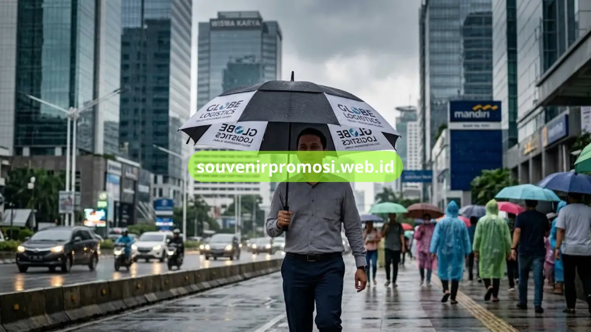
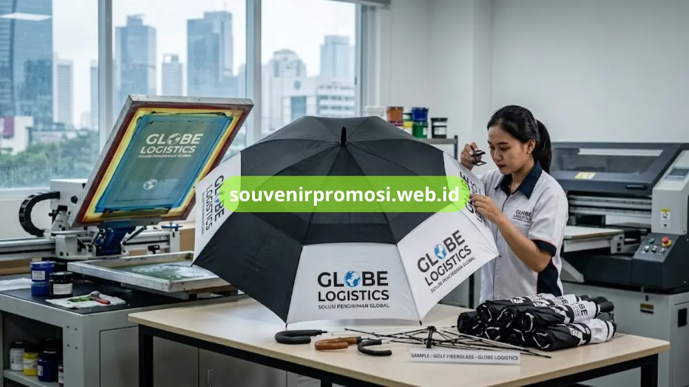

Poin Penting
- Harga cetak payung promosi di Jakarta berkisar Rp35.000-Rp150.000 per pcs tergantung jenis dan spesifikasi.
- Payung golf premium cocok untuk hadiah eksekutif, payung lipat standar lebih ekonomis untuk giveaway massal.
- Kerangka fiberglass lebih tahan angin kencang dibanding kerangka besi, meski harganya lebih tinggi.
- Jumlah warna logo dan teknik sablon (manual vs digital) berpengaruh langsung pada biaya per pcs.
- Souvenir Promosi memberikan garansi sablon anti luntur dan gratis sampel desain pra-produksi.
Daftar Isi
Payung promosi masih dipakai bertahun-tahun setelah dibagikan, dibawa ke kantor, dipinjam rekan kerja, dan dilihat orang lain di jalan saat hujan maupun terik. Berbeda dengan flyer atau kartu nama yang berakhir di tempat sampah dalam hitungan hari, payung dengan cetak logo tetap eksis di rak sepatu, bagasi mobil, atau meja kerja klien selama bertahun-tahun.
Karakter inilah yang membuat payung promosi masuk kategori souvenir korporat dengan Return on Investment (ROI) tertinggi dibanding merchandise sekali pakai lainnya. Setiap kali payung dibuka, logo perusahaan Anda otomatis tampil sebagai iklan berjalan gratis, tanpa biaya media tambahan.
Bagi tim procurement, HRD, maupun bagian marketing yang sedang menyiapkan budget untuk gathering, seminar, atau paket welcome kit karyawan baru, pertanyaan paling sering muncul adalah soal harga. Artikel ini membahas tuntas estimasi biaya cetak payung promosi di Jakarta, faktor yang memengaruhi harga, hingga cara memilih vendor yang tepat.
Estimasi Harga Cetak Payung Promosi di Jakarta
Harga cetak payung promosi di Jakarta berkisar antara Rp35.000 hingga Rp150.000 per pcs, tergantung jenis payung, bahan kerangka, dan teknik sablon logo yang digunakan. Payung lipat standar dengan sablon satu warna berada di kisaran harga terendah, sementara payung golf premium dengan kerangka fiber anti angin dan sablon full color berada di kisaran harga tertinggi. Semakin besar jumlah pesanan, semakin rendah pula harga per pcs yang didapatkan karena skema grosir.
Rentang harga tersebut merupakan gambaran umum di pasar Jakarta, dan angka pastinya baru bisa dipastikan setelah vendor mengetahui spesifikasi detail seperti ukuran payung, jumlah titik sablon, serta kuantitas order. Sebagai gambaran awal sebelum menghubungi vendor, pahami dulu perbedaan jenis payung dan skema harganya pada tabel berikut.
Tabel Komparasi Jenis Payung Promosi & Skema Harga Grosir
Setiap jenis payung memiliki karakter berbeda yang cocok untuk kebutuhan branding yang berbeda pula. Payung golf misalnya lebih pas untuk hadiah eksekutif atau souvenir mitra bisnis, sementara payung lipat lebih sering dipakai sebagai giveaway massal di acara seminar atau bazar.
| Jenis Payung | Range Harga per Pcs | Ukuran Sablon | Kelebihan Utama |
|---|---|---|---|
| Payung Golf Premium | Rp95.000 - Rp150.000 | Hingga 4 panel (besar) | Diameter lebar, kerangka fiber tahan angin kencang, kesan eksklusif untuk hadiah eksekutif |
| Payung Lipat 3 Praktis | Rp45.000 - Rp70.000 | 1-2 panel | Ringkas, mudah dibawa dalam tas, cocok untuk giveaway karyawan atau event outdoor |
| Payung Standard Gagang J | Rp35.000 - Rp55.000 | 1-2 panel | Harga paling ekonomis untuk order massal, area sablon cukup luas dan jelas terlihat |
| Payung Lipat 2 Otomatis | Rp65.000 - Rp95.000 | 2 panel | Sistem buka-tutup otomatis satu tombol, kesan lebih modern dan praktis dipakai |
Harga di atas bersifat estimasi umum dan dapat berubah menyesuaikan bahan kain (parasut, taffeta, atau polyester), jumlah warna logo, serta kuantitas minimum order yang diambil.
Faktor Utama yang Mempengaruhi Biaya Cetak Payung Logo
Kualitas Kerangka Anti Angin
Kerangka payung menjadi komponen yang paling menentukan daya tahan produk. Payung dengan kerangka fiberglass lebih fleksibel dan tidak mudah patah saat tertiup angin kencang dibanding kerangka besi biasa, namun harganya juga lebih tinggi. Untuk souvenir yang ingin dipakai jangka panjang oleh klien, investasi pada kerangka anti angin sangat disarankan agar logo perusahaan tetap terlihat bagus selama payung masih digunakan, bukan malah rusak dalam beberapa bulan.

Teknik Sablon Manual vs Digital
Sablon manual (screen printing) umumnya lebih ekonomis untuk order dengan satu hingga dua warna logo dan kuantitas besar, sementara sablon digital lebih fleksibel untuk logo dengan gradasi warna atau desain rumit meski biayanya sedikit lebih tinggi per pcs pada order kecil. Pemilihan teknik yang tepat sesuai kompleksitas desain logo akan berpengaruh langsung pada efisiensi biaya cetak.
Jumlah Warna Logo yang Dicetak
Semakin banyak warna dalam logo, semakin banyak pula proses sablon yang harus dilalui, dan ini berdampak langsung pada harga per pcs. Logo satu warna jauh lebih ekonomis dibanding logo tiga atau empat warna. Jika budget menjadi pertimbangan utama, menyederhanakan logo menjadi satu atau dua warna dominan bisa menjadi solusi tanpa mengurangi keterbacaan brand.
Mengapa Memilih Souvenir Promosi sebagai Vendor Terpercaya
Souvenir Promosi telah melayani ratusan klien korporat di Jabodetabek untuk kebutuhan payung promosi, merchandise kantor, dan paket event kit resmi. Sebagai vendor yang beroperasi di bawah badan usaha PT resmi dan legal, Souvenir Promosi memahami kebutuhan divisi procurement dan finance perusahaan yang membutuhkan bukti transaksi jelas untuk keperluan audit internal.
Beberapa keunggulan yang membuat Souvenir Promosi menjadi pilihan tepat untuk kebutuhan cetak payung logo perusahaan Anda:
- Garansi cetak sablon presisi anti luntur — hasil sablon dijamin tidak mudah pudar meski dicuci atau terkena hujan berulang kali, sehingga logo brand tetap terlihat jelas dalam pemakaian jangka panjang.
- Gratis sampel desain pra-produksi — sebelum masuk ke tahap produksi massal, tim desain akan mengirimkan mock-up digital agar Anda dapat memastikan posisi logo, warna, dan ukuran sablon sudah sesuai keinginan.
- Opsi pembayaran invoice termin B2B resmi — memudahkan divisi finance perusahaan yang membutuhkan skema pembayaran bertahap sesuai prosedur internal.
- Armada kurir Jabodetabek — pengiriman langsung ke kantor atau lokasi event tanpa perlu repot mengatur logistik pihak ketiga.
Kesimpulan
Menentukan harga cetak payung promosi yang tepat bukan hanya soal mencari angka termurah, tetapi memastikan kualitas kerangka, ketahanan sablon, dan reputasi vendor turut menjadi pertimbangan.
Dengan pengalaman melayani ratusan klien korporat serta dukungan armada pengiriman Jabodetabek, Souvenir Promosi siap membantu merealisasikan kebutuhan payung promosi perusahaan Anda dari tahap konsultasi desain hingga produk siap dikirim. Konsultasikan kebutuhan Anda sekarang di https://souvenirpromosi.web.id/.